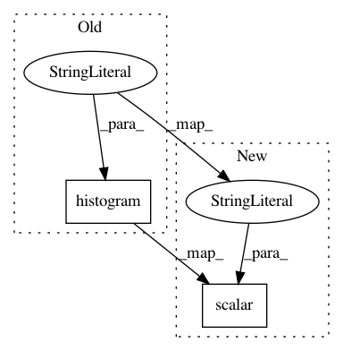

0920cdb07278165d02b75b4779f2c3931c82eec3,deepplantphenomics/count_ception_model.py,CountCeptionModel,_graph_tensorboard_summary,#CountCeptionModel#Any#Any#Any#Any#,25
Before Change
if self._validation:
tf.summary.scalar("validation/accuracy", self._graph_ops["val_accuracy"],
collections=["custom_summaries"])
tf.summary.histogram("validation/class_predictions", self._val_class_predictions,
collections=["custom_summaries"])
def _assemble_graph(self):
with self._graph.as_default():
After Change
tf.summary.scalar("train/loss", self._graph_ops["cost"], collections=["custom_summaries"])
tf.summary.scalar("train/accuracy", self._graph_ops["accuracy"], collections=["custom_summaries"])
if self._validation:
tf.summary.scalar("validation/loss", self._graph_ops["val_losses"],
collections=["custom_summaries"])
tf.summary.scalar("validation/accuracy", self._graph_ops["val_accuracy"],
collections=["custom_summaries"])
def _assemble_graph(self):
In pattern: SUPERPATTERN
Frequency: 3
Non-data size: 2
Instances
Project Name: p2irc/deepplantphenomics
Commit Name: 0920cdb07278165d02b75b4779f2c3931c82eec3
Time: 2019-08-20
Author: jis860@discus-desk09.usask.ca
File Name: deepplantphenomics/count_ception_model.py
Class Name: CountCeptionModel
Method Name: _graph_tensorboard_summary
Project Name: p2irc/deepplantphenomics
Commit Name: d4888f616a92db22a257682239c8ddce94a1fb35
Time: 2017-09-22
Author: jubbens@gmail.com
File Name: deepplantphenomics/deepplantpheno.py
Class Name: DPPModel
Method Name: begin_training
Project Name: p2irc/deepplantphenomics
Commit Name: c1667e699b4602ed9ae3c4fc27731e1ce2398776
Time: 2017-09-22
Author: jubbens@gmail.com
File Name: deepplantphenomics/deepplantpheno.py
Class Name: DPPModel
Method Name: begin_training